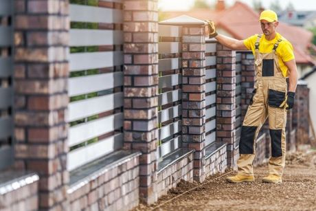

Residential Fencing
Spice up your backyard and turn it into the private getaway of your dreams. We’ll help you find the best design solutions that conform to your taste and budget.
Learn more →When you have a commercial or residential property, it is important to protect it because it is a huge investment. One of the best ways of keeping your property safe and secure is by erecting a fence. If you would love to build a fence on your property, we are the top San Antonio fence company, with affordable and practical solutions.
We are here to make into reality all your ideas of the perfect private backyard space. With your vision leading the line, we’ll help you find the best design solutions that conform to your taste and budget.
Spice up your backyard and turn it into the private getaway of your dreams. We’ll help you find the best design solutions that conform to your taste and budget.
Learn more →Our custom wood panels are designed with privacy in mind and built to withstand San Antonio’s sunny skies and wet seasons.
Learn more →Crafted from premium grade galvanized steel, our chain-link fencing systems are durable, weather-resistant, and built to last.
Learn more →Aluminum fences bring a sturdy, secure and premium finish to the property lines of homeowners.
Learn more →Our farm and ranching solutions are built to stand the test of time and adversity, using the highest quality materials.
Learn more →Our skilled installation crew will partner with you to bring the best version of your dream to reality.
Learn more →Every service listed on the original Fence Pros of San Antonio website.

With over 20 years of experience, we are the best local fencing contractor in San Antonio. This is our community and we have been working hard to provide the residents with top-quality services. All the fences that we build are made using high-quality materials and this is how we can confidently guarantee longevity.
We have experienced, licensed, and insured fence installation experts and we can handle commercial and residential projects.
Fence Pros of San Antonio serves San Antonio and the surrounding communities listed on the original website.
We are a local company that takes great pride in offering fence installation and repair services.
Call (210) 465-1194Our fence specialists are passionate and committed to ensuring that your fencing needs are addressed and met. Every time we are hired for a project, we will provide a warranty and a quality workmanship guarantee.
Get a Free QuoteYour home is your haven. We are here to help with the installation of your fences to keep your children and pets safe and keep unwanted guests outside.
You can count on us to build a fence that will make a great impression on your clients and visitors. We are able to install a wide range of fences for commercial clients.
If you have a fence on your property that seems to have seen its best days, we can help you with professional repairs and make it look as good as new.
Have another question? Call us and our team will be happy to help.
Call (210) 465-1194On average, fence installation costs between $13 and $25 per linear foot with most homeowners spending between $1,580 and $3,418 depending on the type of fencing materials selected.
It depends on the size of the job, but most fences can be installed in one to three days.
The most commonly used wood types for fences are spruce, cedar and pine, so the longevity of your fence naturally depends on the type of wood it’s made from.
Concrete is the most secure material for setting fence posts, especially if you have sandy soil.
PVC/Vinyl is durable and weather-resistant. Aluminum and steel are durable, long-lasting fencing materials.
We are the leading San Antonio fence company, with a myriad of fencing solutions. Contact us and let one of our experts take you through what we have to offer.